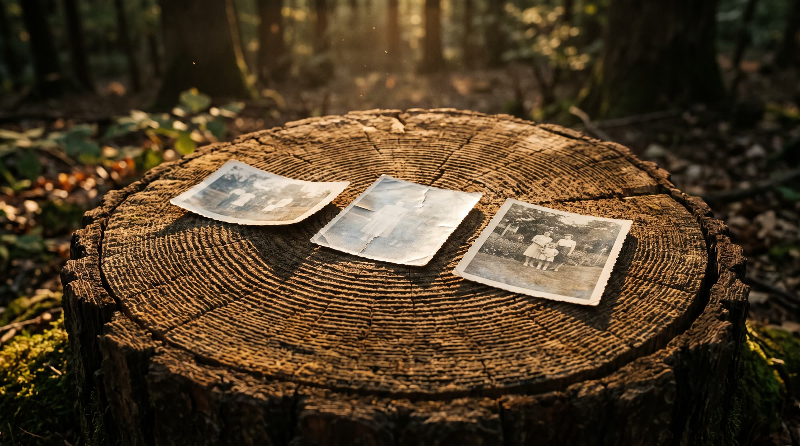
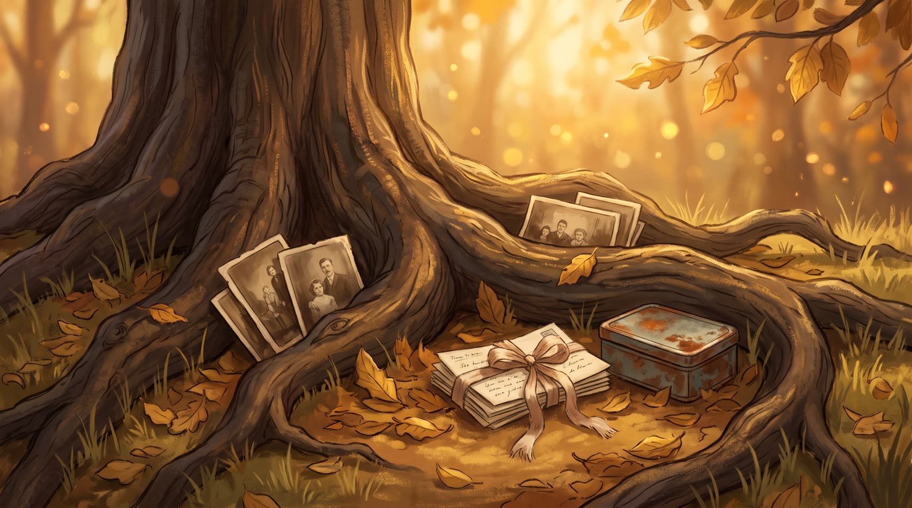
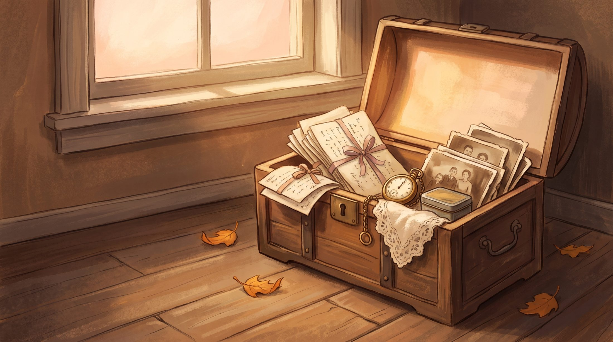
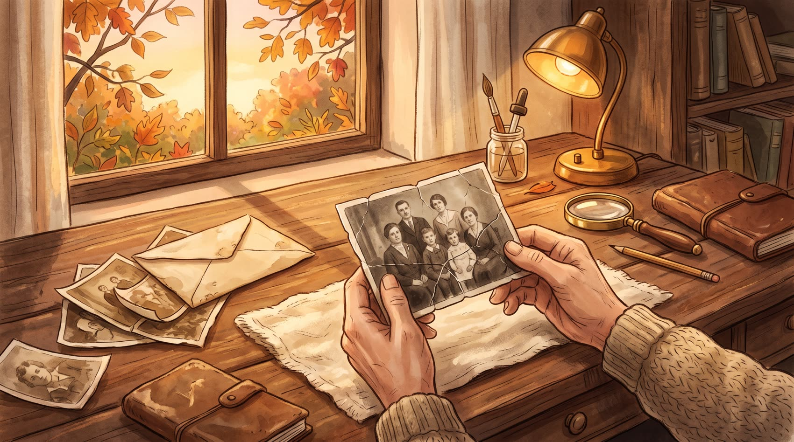
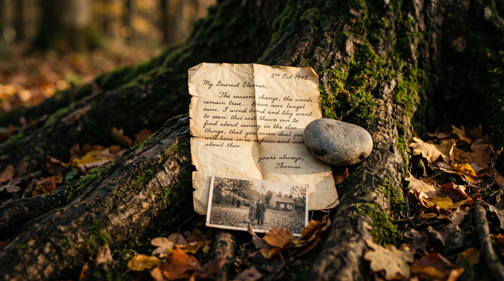
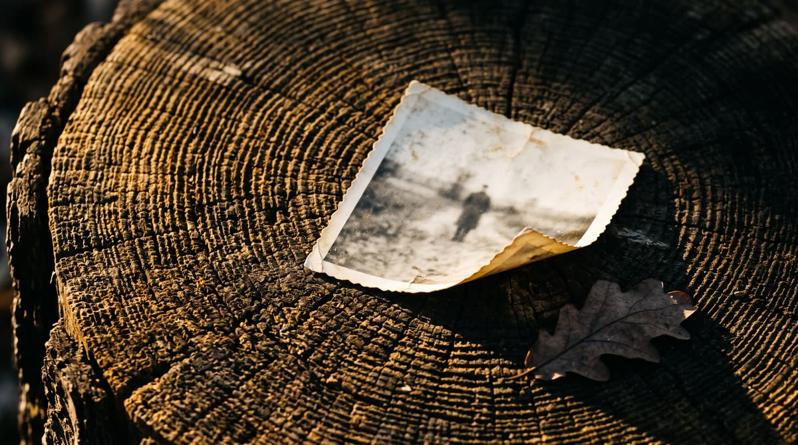
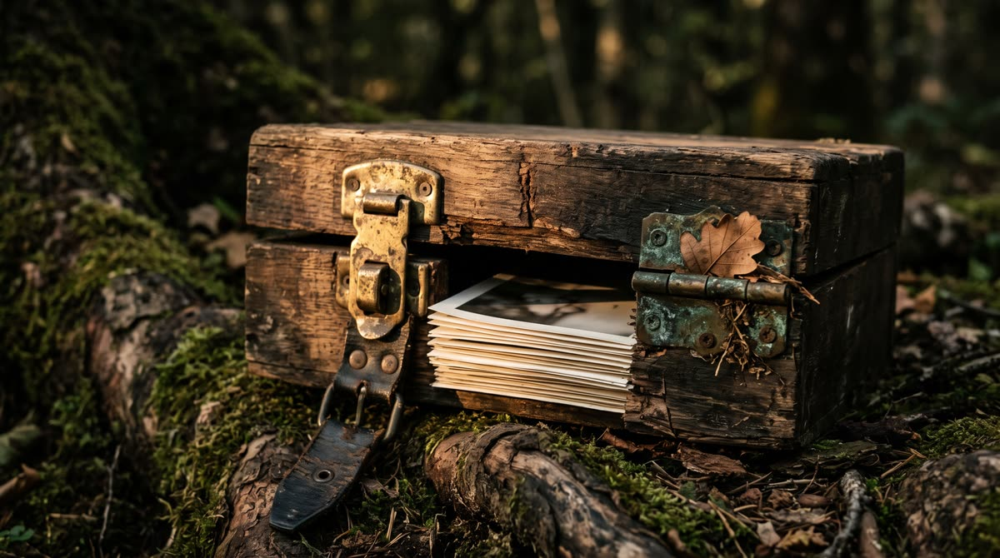
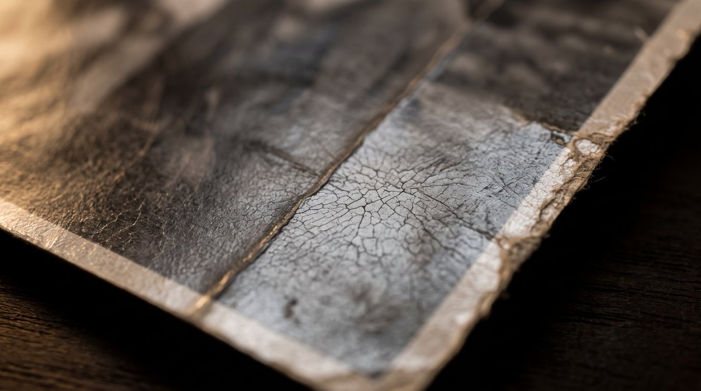
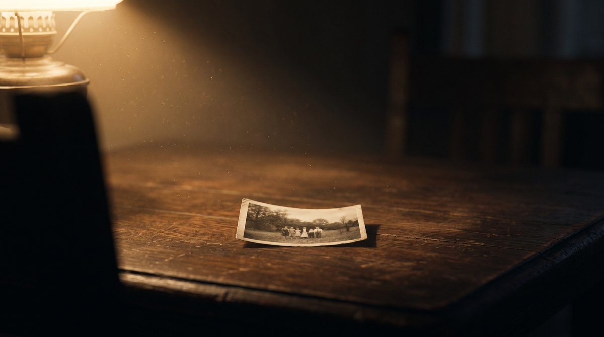
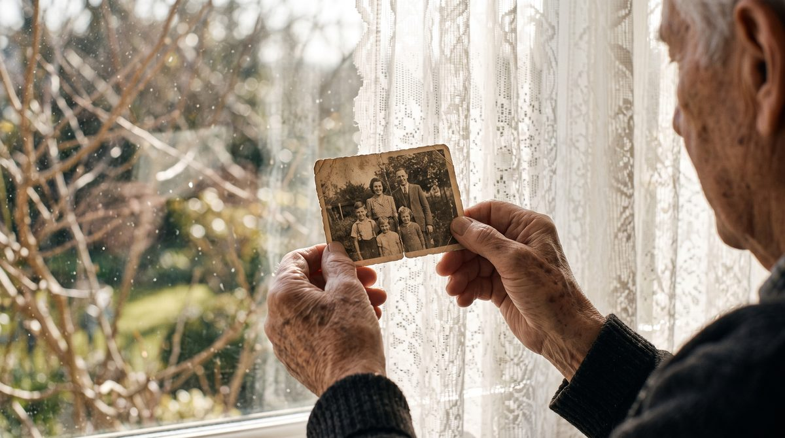

Глава первая
Дерево рода держится на снимках
У каждой семьи есть дерево, только растёт оно не в саду. Его кольца — это свадьба бабушки, двор детства, последнее лето с дедом. Пока снимок цел, ветка жива. Когда эмульсия осыпается, обрывается не бумага, а связь.
Мы занимаемся этим деревом с одной стороны: следим, чтобы кадры, на которых оно держится, дожили до внуков в узнаваемом виде.
Самые ранние карточки: паспортные, студийные, фронтовые. Часто единственный портрет человека, которого уже никто не помнит в лицо.
Семейные съёмки: застолья, дворы, поездки. Кадры, где поколения ещё стоят рядом в одном кадре.
Дети и внуки, которым это достанется. Мы работаем ради той минуты, когда снимок покажут им.

Глава вторая
Что лежит в корнях
Самое старое обычно хранится хуже всего. Довоенные карточки лежат в жестянке на антресолях, в конверте между страницами книги, в коробке, которую переносили из квартиры в квартиру четыре раза. Бумага там тонкая, эмульсия хрупкая, подпись на обороте выцвела до карандашной тени.
Эти снимки чаще всего единственные. Второго негатива нет, переснять некого, спросить не у кого. Поэтому с корнями мы работаем медленнее всего и никогда не спешим отдать результат в тот же час.

Глава третья
Сундук памяти
Коробка из-под обуви, жестянка из серванта, конверт между страницами книги. Там лежат письма, документы, надорванные уголки и снимки, слипшиеся от времени. Это архив — даже если он не подписан и лежит без порядка.
Мы относимся к содержимому как к архиву: ничего не выбрасываем, ничего не «улучшаем» по своему вкусу. Оригинал остаётся оригиналом, восстановленная версия приходит отдельным файлом рядом с ним.

Глава четвёртая
Лицо должно остаться собой
Это главное правило работы и главная причина, почему мы идём медленно. Отретушировать снимок легко, если не жалко человека на нём: разгладить кожу, дорисовать глаза, подтянуть черты к красивому среднему. Тогда с карточки смотрит кто-то другой.
Мы убираем то, что сделало время: трещины, заломы, пятна, выцветание, следы клея и скотча. Мы не трогаем то, что делало человека человеком: форму носа, посадку глаз, морщины, шрам, кривоватую улыбку. Если участок утрачен полностью и достроить его честно нельзя — мы говорим об этом прямо, а не придумываем.
Снимок должен вернуться домой, а не прийти вместо кого-то.
Правило работыГлава пятая
Стол реставратора
Работа начинается с того, что снимок просто рассматривают. Где залом, где грибок, где выцвел один угол, а где пятно легло прямо на щёку. От этого зависит, что вообще можно вернуть, а где придётся остановиться и сказать вам об этом.
Дальше — спокойные проходы: бумага, свет, тон, зерно. После каждого прохода лицо сверяют с исходником: не поехали ли черты, не стал ли взгляд чужим. Это и есть та часть, которую нельзя ускорить без потерь.

Глава шестая
Как проходит работа
Вы оставляете заявку
Приём открыт. Достаточно снять карточку телефоном при дневном свете — целиком, без обрезанных краёв. Плёнку и альбомные развороты тоже берём.
Мы смотрим на материал
Сначала человек, а не алгоритм: что за повреждение, где утрата, что вообще можно вернуть честно. На этом шаге мы говорим, если снимок сложный.
Восстановление
Бумага, свет, тон, зерно. Спокойная ручная работа с проверкой лица на каждом проходе. Никакой гонки — качество здесь важнее скорости.
Выдача
Вы получаете восстановленный файл и оригинал в исходном виде. Если результат не совпал с вашей памятью о человеке — скажите, мы вернёмся к работе.
Глава седьмая
Честный срок
Мы не обещаем мгновенный результат. Такая скорость означала бы, что снимок никто не смотрел глазами, а лицо отдали на усмотрение машины.
Обычный порядок для простой карточки, принятой днём. Мы предпочитаем отдать работу отлежавшейся.
Сложные случаи: сильные утраты, склейки, несколько лиц в кадре. Если понадобится больше — предупредим заранее.
Приём идёт постоянно, а выдача иногда встаёт на паузу: мы держим очередь короткой, чтобы каждая карточка получила своё время. Об этом мы сообщаем открыто, а не молчим в переписке.

Кольца
Возраст видно по кольцам
Спил старого дерева читается как опись: сухой год - узкая полоса, щедрый - широкая. Никто не подписывал эти кольца, но они лежат строго по порядку.
Со снимком то же самое. Заломы, потёртые углы, выцветший край - это не брак, а следы того, что карточку держали в руках. Мы убираем шум времени и стараемся не стереть вместе с ним сами следы.

Крышка
Самое трудное - открыть коробку
Люди годами не поднимают крышку не потому, что забыли. Просто там лежит то, что сразу возвращает голос, кухню и целый дом - а к этому надо быть готовым.
Начните с одной карточки. Не нужно разбирать весь ящик за вечер: достаточно достать ту, которую жальче всего потерять, и снять её при ровном свете.

Крона
Крону держит то, чего не видно
Снизу видно только свет и листья. А держит эту крону то, что лежит в земле и в стволе - годы, которые давно прошли и которых никто не снимал.
С семьёй так же. Внуки живут наверху, на свету, а держат их несколько карточек от прадедов: подпись на обороте, дата карандашом, имя, которое ещё помнят произносить вслух.
Эмульсия
Вблизи снимок перестаёт быть картинкой
Поднесите карточку к глазам вплотную - и сюжет пропадёт. Останется бумага: волокно, зерно и тонкий слой эмульсии сверху, который держится на честном слове.
Сохнет, трескается и осыпается по краю именно этот слой. Поэтому мы сначала смотрим на материал и только потом на то, кто в кадре: надо понять, что у нас под рукой, прежде чем что-то делать.

Лампа
Одна карточка под лампой
Так это и выглядит на самом деле: стол, лампа, пыль в луче и одна фотография, которую положили перед собой и долго рассматривают, прежде чем притронуться.
Мы не берём коробку целиком и не торопим. Сначала один кадр - самый важный. Пока он лежит под лампой, никто ничего не решает за вас.

Окно
Снимок смотрят на свет
Первое, что делает человек, достав старую карточку, - подносит её к окну. Не к лампе и не к экрану: к дневному свету, где видно и бумагу, и то, что на ней осталось.
Нам для работы нужно ровно это. Снимите карточку у окна в пасмурный день, без вспышки и без бликов - такого кадра достаточно, чтобы мы поняли материал.

Глава последняя
Принесите одну карточку
Начните с той, которую жальче всего потерять. Оставьте заявку в листе ожидания — мы ответим и скажем, что с ней можно сделать честно.